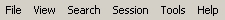
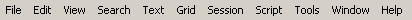

This part will present all menus which may be found in SQLTools
- File Menu
- Edit Menu
- View Menu
- Search Menu
- Text Menu
- Grid Menu
- Session Menu
- Script Menu
- Tools Menu
- Window Menu
- Help Menu
All menus may not be acceded every time.
Without opened document, you have :

With opened document :
